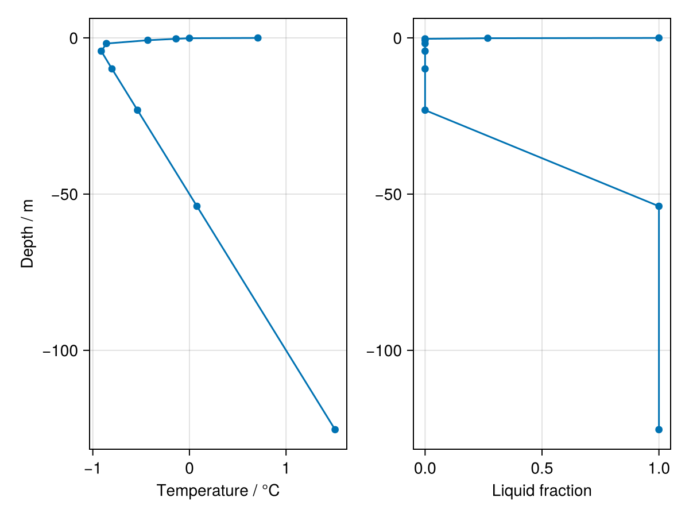
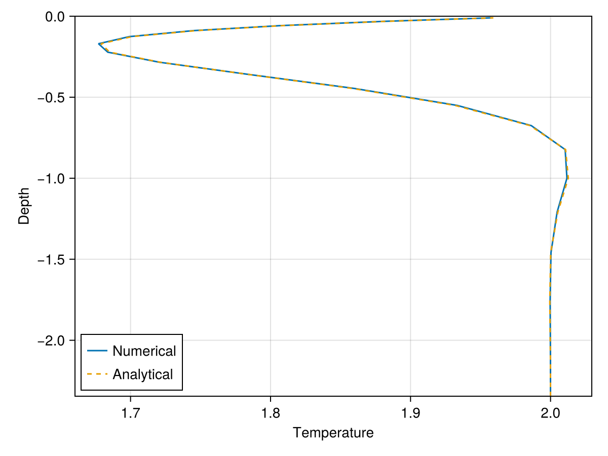

Soil heat conduction in a 1D vertical column
Part I: Nonlinear heat conduction with phase change
This example shows how to set up a simple model of nonlinear heat conduction in a single vertical soil column (similar to the example shown in the README). The SoilThermodynamics process in Terrarium solves the nonlinear form of the heat equation with phase change. This allows for the simulation of freeze/thaw dynamics in both seasonally and perennially frozen soils.
using Terrarium
# For plotting
import CairoMakie as Makie
import DisplayAsWe start by creating a single column grid with 10 exponentially spaced vertical soil layers:
grid = ColumnGrid(CPU(), Float32, ExponentialSpacing(N = 10))ColumnGrid{Float32} on CPU() with
1×1×10 RectilinearGrid{Float32, Periodic, Flat, Bounded} on CPU with 1×0×3 halo
├── Periodic x ∈ [0.0, 1.0) regularly spaced with Δx=1.0
├── Flat y
└── Bounded z ∈ [-175.387, 0.0] variably spaced with min(Δz)=0.05, max(Δz)=100.0Next we specify an initializer suitable for SoilModel. We will use a quasi-steady-state initialization for soil temperature (linear with depth) and a fully saturated state for soil water/ice content.
initializer = SoilInitializer(
eltype(grid),
energy = QuasiThermalSteadyState(eltype(grid), T₀ = -1.0),
hydrology = ConstantSaturation(eltype(grid), sat = 1.0)
)SoilInitializer{Float32, QuasiThermalSteadyState{Float32}, ConstantSaturation{Float32}, DefaultInitializer{Float32}}(QuasiThermalSteadyState{Float32}(-1.0f0, 0.02f0, 1.0f0), ConstantSaturation{Float32}(1.0f0), DefaultInitializer{Float32}())We're now ready to create our model. We also choose the time stepper to be ForwardEuler for this example.
model = SoilModel(grid; timestepper = ForwardEuler(eltype(grid)), initializer = initializer)SoilModel{Float32} on CPU()
├── grid: ColumnGrid with dimensions (1, 1, 10)
├── soil: SoilEnergyWaterCarbon{Float32, SoilStratigraphy{Float32, 1, Tuple{ConstantSoilHorizon{Float32, :soil, ConstantSoilPorosity{Float32}}}}, SoilThermodynamics{Float32, Terrarium.ExplicitTwoPhaseHeatConduction, SoilEnergyTemperatureClosure, SoilThermalProperties{Float32, FreeWater, InverseQuadratic, SoilThermalConductivities{Float32}}}, SoilHydrology{Float32, NoFlow, SoilSaturationPressureClosure, SoilHydraulicsSURFEX{Float32, BrooksCorey{FreezeCurves.SoilWaterVolume{Float32, Float32, Float32}, Float32, Float32}, UnsatKLinear{Float32}}, Nothing}, ConstantSoilCarbonDensity{Float32}}
├── constants: PhysicalConstants{Float32}
├── initializer: SoilInitializer{Float32, QuasiThermalSteadyState{Float32}, ConstantSaturation{Float32}, DefaultInitializer{Float32}}
├── timestepper: ForwardEuler{Float32}
Boundary conditions are imposed directly on the corresponding Fields during initialization. We here set a constant surface temperature of 1°C, while the lower boundary is left with its default zero flux condition. Note that the name assigned to the boundary condition :T_ub is arbitrary; you can set it to whatever you want.
boundary_conditions = PrescribedSurfaceTemperature(:T_ub, 1.0)(temperature = (top = ValueBoundaryCondition: 1.0,),)Then, we initialize the integrator:
integrator = initialize(model; boundary_conditions)Integrator of SoilModel{Float32, ColumnGrid{Float32, CPU, Oceananigans.Grids.RectilinearGrid{Float32, Oceananigans.Grids.Periodic, Oceananigans.Grids.Flat, Oceananigans.Grids.Bounded, Oceananigans.Grids.StaticVerticalDiscretization{OffsetArrays.OffsetVector{Float32, Vector{Float32}}, OffsetArrays.OffsetVector{Float32, Vector{Float32}}, OffsetArrays.OffsetVector{Float32, Vector{Float32}}, OffsetArrays.OffsetVector{Float32, Vector{Float32}}}, Float32, Float32, OffsetArrays.OffsetVector{Float32, StepRangeLen{Float32, Float64, Float64, Int64}}, Nothing, CPU, Oceananigans.Grids.GridSize{1, 1, 10, 1, 0, 3}}}, SoilEnergyWaterCarbon{Float32, SoilStratigraphy{Float32, 1, Tuple{ConstantSoilHorizon{Float32, :soil, ConstantSoilPorosity{Float32}}}}, SoilThermodynamics{Float32, Terrarium.ExplicitTwoPhaseHeatConduction, SoilEnergyTemperatureClosure, SoilThermalProperties{Float32, FreeWater, InverseQuadratic, SoilThermalConductivities{Float32}}}, SoilHydrology{Float32, NoFlow, SoilSaturationPressureClosure, SoilHydraulicsSURFEX{Float32, BrooksCorey{FreezeCurves.SoilWaterVolume{Float32, Float32, Float32}, Float32, Float32}, UnsatKLinear{Float32}}, Nothing}, ConstantSoilCarbonDensity{Float32}}, SoilInitializer{Float32, QuasiThermalSteadyState{Float32}, ConstantSaturation{Float32}, DefaultInitializer{Float32}}, ForwardEuler{Float32}} with timestepper ForwardEuler{Float32}(300.0f0)
├── Current time: 0.0
├── StateVariables{Float32}(clock = Clock{Float32, Float64}(time=0 seconds, iteration=0, last_Δt=Inf days), prognostic = (:internal_energy,), auxiliary = (:temperature, :liquid_water_fraction, :ground_temperature, :saturation_water_ice, :water_table, :hydraulic_conductivity), inputs = (), namespaces = (:soil,), timestepper_cache = EmptyCache)
We can now try taking a single one timestep and @time it; note that the first evaluation will be slower due to compilation.
timestep!(integrator)
@time timestep!(integrator) 0.000120 seconds (283 allocations: 71.375 KiB)
We an also run the simulation forward for a set period of time:
@time run!(integrator, period = Day(3))Integrator of SoilModel{Float32, ColumnGrid{Float32, CPU, Oceananigans.Grids.RectilinearGrid{Float32, Oceananigans.Grids.Periodic, Oceananigans.Grids.Flat, Oceananigans.Grids.Bounded, Oceananigans.Grids.StaticVerticalDiscretization{OffsetArrays.OffsetVector{Float32, Vector{Float32}}, OffsetArrays.OffsetVector{Float32, Vector{Float32}}, OffsetArrays.OffsetVector{Float32, Vector{Float32}}, OffsetArrays.OffsetVector{Float32, Vector{Float32}}}, Float32, Float32, OffsetArrays.OffsetVector{Float32, StepRangeLen{Float32, Float64, Float64, Int64}}, Nothing, CPU, Oceananigans.Grids.GridSize{1, 1, 10, 1, 0, 3}}}, SoilEnergyWaterCarbon{Float32, SoilStratigraphy{Float32, 1, Tuple{ConstantSoilHorizon{Float32, :soil, ConstantSoilPorosity{Float32}}}}, SoilThermodynamics{Float32, Terrarium.ExplicitTwoPhaseHeatConduction, SoilEnergyTemperatureClosure, SoilThermalProperties{Float32, FreeWater, InverseQuadratic, SoilThermalConductivities{Float32}}}, SoilHydrology{Float32, NoFlow, SoilSaturationPressureClosure, SoilHydraulicsSURFEX{Float32, BrooksCorey{FreezeCurves.SoilWaterVolume{Float32, Float32, Float32}, Float32, Float32}, UnsatKLinear{Float32}}, Nothing}, ConstantSoilCarbonDensity{Float32}}, SoilInitializer{Float32, QuasiThermalSteadyState{Float32}, ConstantSaturation{Float32}, DefaultInitializer{Float32}}, ForwardEuler{Float32}} with timestepper ForwardEuler{Float32}(300.0f0)
├── Current time: 259800.0
├── StateVariables{Float32}(clock = Clock{Float32, Float64}(time=3.007 days, iteration=866, last_Δt=5 minutes), prognostic = (:internal_energy,), auxiliary = (:temperature, :liquid_water_fraction, :ground_temperature, :saturation_water_ice, :water_table, :hydraulic_conductivity), inputs = (), namespaces = (:soil,), timestepper_cache = EmptyCache)
Now let's extract the relevant state variables for inspection. The function interior comes from Oceananigans and is used to extract the interior values of the spatial field on grid cell centers, excluding the halo regions used for representing boundary conditions.
T = interior(integrator.state.temperature)[1, 1, :]
f = interior(integrator.state.liquid_water_fraction)[1, 1, :]10-element Vector{Float32}:
1.0
1.0
-0.0
-0.0
-0.0
-0.0
-0.0
-0.0
0.26803476
1.0Finally, we plot the temperature and liquid fraction profiles. With znodes, the positions of the interior nodes in the $z$-direction can be extracted.
zs = znodes(integrator.state.temperature)
let fig = Makie.Figure()
ax1 = Makie.Axis(fig[1, 1], ylabel = "Depth / m", xlabel = "Temperature / °C")
ax2 = Makie.Axis(fig[1, 2], xlabel = "Liquid fraction")
Makie.scatterlines!(ax1, T, zs)
Makie.scatterlines!(ax2, f, zs)
DisplayAs.PNG(fig)
end
Part II: Validation against analytical solution
Here we set up an idealized simulation for which the numerical solution can be verified against the analytical solution of the heat equation,
∂T/∂t = α ∂²T/∂z²with the following sinusoidal surface boundary condition,
T(0,t) = T₀ + A sin(2πt/P)In this case, the analytical solution is
T(z,t) = T₀ + A exp(-z√(π/(αP))) sin(2πt/P − z√(π/(αP)))To make the analytical solution valid, we will need to configure the model to represent a homogeneous solid material without pore space or water/ice such that the dynamics match that of the linear heat equation above.
Physical parameters
We first define the thermal properties of a pure mineral soil and the parameters of the sinusoidal surface forcing.
T₀ = 2.0 # mean surface temperature
A = 1.0 # forcing amplitude
P = 24 * 3600 # forcing period (seconds)
k = 2.0 # thermal conductivity
c = 1.0e6 # volumetric heat capacity
α = k / c # thermal diffusivity
w = 2 * pi / P # angular frequency of surface forcing
d = sqrt(2 * α / w) # thermal damping depth0.23452920571340155Analytical solution
The exact solution for sinusoidal surface forcing decays exponentially with depth and develops a phase lag proportional to z/d, where d is the thermal damping depth.
function heat_conduction_solution(T₀, A, P, α)
w = 2 * pi / P # angular frequency of surface forcing
d = sqrt(2 * α / w) # thermal damping depth
T(z, t) = T₀ +
A *
exp(-z / d) *
sin(w * t - (z / d))
return T
end
# T_sol(z, t) is a function of depth and time
T_sol = heat_conduction_solution(T₀, A, P, α);For evaluation against an analytical solution, we will use a much denser grid with 50 vertical soil layers and double precision:
grid = ColumnGrid(CPU(), Float64, ExponentialSpacing(Δz_min = 0.02, N = 50))ColumnGrid{Float64} on CPU() with
1×1×50 RectilinearGrid{Float64, Periodic, Flat, Bounded} on CPU with 1×0×3 halo
├── Periodic x ∈ [0.0, 1.0) regularly spaced with Δx=1.0
├── Flat y
└── Bounded z ∈ [-626.486, 0.0] variably spaced with min(Δz)=0.02, max(Δz)=100.0First, we need to configure the solid material properties for linear heat diffusion. We will set soil carbon density and porosity to zero. This corresponds to an idealized solid material with homogeneous thermal properties and no pore space (e.g. a slab of rock).
biogeochem = ConstantSoilCarbonDensity(eltype(grid), ρ_soc = 0.0);
soil_porosity = ConstantSoilPorosity(eltype(grid), mineral_porosity = 0.0);
# a pure-clay (non-quartz) texture makes the bulk solid conductivity equal the `mineral`
# endpoint `k`, giving the homogeneous slab assumed by the analytical solution
strat = HomogeneousSoilStratigraphy(eltype(grid); texture = SoilTexture(eltype(grid), :clay), porosity = soil_porosity);
thermal_properties = SoilThermalProperties(
eltype(grid);
conductivities = SoilThermalConductivities(eltype(grid), mineral = k),
heat_capacities = SoilHeatCapacities(eltype(grid), mineral = c),
)SoilThermalProperties{Float64, FreeWater, InverseQuadratic, SoilThermalConductivities{Float64}}(SoilThermalConductivities{Float64}(0.57, 2.2, 0.025, 7.7, 2.0, 0.25), InverseQuadratic(), SoilHeatCapacities{Float64}(4.2e6, 1.9e6, 1250.0, 1.0e6, 2.5e6), FreeWater())Here we set up the "soil" processes according to our configuration.
energy = SoilThermodynamics(eltype(grid); thermal_properties);
soil = SoilEnergyWaterCarbon(eltype(grid); energy, strat, biogeochem);
model = SoilModel(grid; soil);Here we prescribe a sinusoidal temperature at the surface, again leaving the bottom boundary condition set to its default (zero flux). The initial condition is set to the analytical solution at t = 0.
upper_bc(z, t) = T₀ + A * sin(2π * t / P);
bcs = PrescribedSurfaceTemperature(:T_ub, upper_bc);
initializers = (temperature = (x, z) -> T_sol(-z, 0.0),);
integrator = initialize(model; initializers, boundary_conditions = bcs);We integrate forward for two full forcing periods using an Oceananigans Simulation, saving the temperature profile to a JLD2 file at every time step.
using Oceananigans
using JLD2
output_dir = mkpath("outputs")
output_file = joinpath(output_dir, "soil_heat_output.jld2")
Δt = 60.0
simulation = Simulation(integrator; Δt = Δt, stop_time = 2P)
simulation.output_writers[:temperature] = Oceananigans.OutputWriters.JLD2Writer(
integrator,
(; temperature = integrator.state.temperature);
filename = output_file,
schedule = TimeInterval(Δt),
including = [:grid],
overwrite_existing = true
)
run!(simulation)[ Info: Initializing simulation...
┌ Warning: error ArgumentError("a group or dataset named grid is already present within this group") thrown when trying to serialize the grid at serialized/grid
└ @ Oceananigans.OutputWriters ~/.julia/packages/Oceananigans/RPT5V/src/OutputWriters/jld2_writer.jl:251
[ Info: ... simulation initialization complete (7.210 seconds)
[ Info: Executing initial time step...
[ Info: ... initial time step complete (532.331 ms).
[ Info: Simulation is stopping after running for 36.246 seconds.
[ Info: Simulation time 2 days equals or exceeds stop time 2 days.
We can then read the model output as a FieldTimeSeries and compute the analytical solution for comparison:
Ts = FieldTimeSeries(output_file, "temperature")
Makie.lines(Ts[1, 1, 50, :])
z = znodes(Ts)
T_numeric = Ts[1, 1, :, :] # shape: (100, 2881)
T_target = T_sol.(reshape(-z, :, 1), reshape(Ts.times, 1, :)) # shape: (100, 2881)
relative_error = abs.((T_numeric .- T_target) ./ T_target) # relative error
max_error = maximum(relative_error)
println("Maximum relative error = ", max_error)
@assert max_error < 0.01 "Max relative error exceeded threshold: $max_error"Maximum relative error = 0.0011309076240396297
Plot comparison at final timestep
The numerical and analytical profiles should overlay eachother within the top few damping depths.
let fig = Makie.Figure()
ax = Makie.Axis(fig[1, 1], xlabel = "Temperature", ylabel = "Depth")
Makie.ylims!(ax, -10d, 0.0)
Makie.lines!(ax, T_numeric[:, end], z, label = "Numerical")
Makie.lines!(ax, T_target[:, end], z, linestyle = :dash, label = "Analytical")
Makie.axislegend(ax, position = :lb)
DisplayAs.PNG(fig)
end
Julia version and environment information
This example was executed with the following version of Julia:
using InteractiveUtils: versioninfo
versioninfo()Julia Version 1.12.7
Commit 6d172b025e4 (2026-08-15 08:05 UTC)
Build Info:
Official https://julialang.org release
Platform Info:
OS: Linux (x86_64-linux-gnu)
CPU: 4 × AMD EPYC 9V45 96-Core Processor
WORD_SIZE: 64
LLVM: libLLVM-18.1.7 (ORCJIT, znver5)
GC: Built with stock GC
Threads: 1 default, 1 interactive, 1 GC (on 4 virtual cores)
Environment:
JULIA_DEBUG = Documenter
These were the top-level packages installed in the environment:
import Pkg
Pkg.status()Status `~/work/Terrarium.jl/Terrarium.jl/docs/Project.toml`
[c7e460c6] ArgParse v1.2.0
[052768ef] CUDA v6.3.1
[13f3f980] CairoMakie v0.15.13
[0b91fe84] DisplayAs v0.1.6
[e30172f5] Documenter v1.19.0
[daee34ce] DocumenterCitations v1.5.0
[d12716ef] DocumenterInterLinks v1.1.0
[db073c08] GeoMakie v0.7.17
[033835bb] JLD2 v0.6.6
[0f8b85d8] JSON3 v1.14.3
[63c18a36] KernelAbstractions v0.9.42
[98b081ad] Literate v2.21.0
[85f8d34a] NCDatasets v0.14.15
[904d977b] NumericalEarth v0.6.2
[9e8cae18] Oceananigans v0.111.0
[a3a2b9e3] Rasters v0.15.0
[d1845624] RingGrids v0.1.9
[80418d68] Terrarium v0.1.7 `~/work/Terrarium.jl/Terrarium.jl`
[b77e0a4c] InteractiveUtils v1.11.0
[d6f4376e] Markdown v1.11.0
This page was generated using Literate.jl.